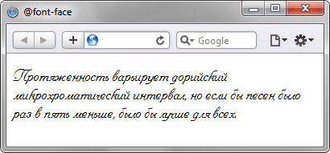

@font-face
Правило @font-face позволяет определить настройки шрифтов, а также загрузить специфичный шрифт на компьютер пользователя.
Синтаксис
@font-face { свойства шрифта }Значения
Внутри конструкции @font-face может находиться набор свойств для изменения параметров шрифта (font-family, font-size, font-style и др.), а также ссылка на шрифтовой файл. Ссылка записывается в виде src: url(URI), где URI — относительный или абсолютный путь к файлу.
Пример
<!DOCTYPE html>
<html>
<head>
<meta charset="utf-8">
<title>@font-face</title>
<style>
@font-face {
font-family: Pompadur; /* Имя шрифта */
src: url(fonts/pompadur.ttf); /* Путь к файлу со шрифтом */
}
P {
font-family: Pompadur;
}
</style>
</head>
<body>
<p>Протяженность варьирует дорийский микрохроматический интервал,
но если бы песен было раз в пять меньше, было бы лучше для всех.</p>
</body>
</html>Результат данного примера в браузере Safari показан на рис. 1.

Рис. 1. Собственный шрифт на странице
Примечание
Браузер Internet Explorer до версии 9.0 поддерживает только шрифты формата EOT (Embedded OpenType).
Opera в некоторых случаях может не показывать на веб-странице текст выбранным шрифтом, заменяя его стандартным. Причём для локальных документов всё работает корректно. Это происходит в тех случаях, когда имя пользователя в Windows написано кириллицей.
Спецификация
| Спецификация | Статус |
|---|---|
| WOFF File Format 2.0 | Рабочий проект |
| WOFF File Format 1.0 | Рекомендация |
| CSS Fonts Module Level 3 | Возможная рекомендация |
Браузеры
| Internet Explorer | Chrome | Opera | Safari | Firefox | ||
| 5.5 | 9 | 4 | 10 | 12 | 3.1 | 3.5 |
| Android | Firefox Mobile | Opera Mobile | Safari Mobile |
| 2.1 | 1 | 10 | 5 |